Mosquito Geospatial Analysis
Project Report
Introduction
The objective of this semester-long independent study was to identify and map existing catch basins (storm drains) and mosquito trap sites within four separate study areas in Milwaukee County (Bay View, Cudahy, the University of Wisconsin-Milwaukee’s campus, and Wauwatosa).
I worked with Haley Johnson, a pathobiological sciences graduate student at the University of Wisconsin-Madison, working for the Center for Disease Control and Prevention’s (CDC) Upper Midwest Center of Excellence for Vector-Borne Disease (MCEVBD). Haley reached out to me after I inquired with the MCEVBD about potential GIS projects. In 2019, she managed and organized a team to treat Milwaukee County area catch basins with larvicide, measure larvae/adult mosquito levels, and gather mosquito population data. This entailed walking through the streets of Milwaukee suburbs, searching for hundreds of specific catch basins to routinely treat and sample. I met with Haley in late December 2019 at the MCEVBD in Madison, Wisconsin, where she asked if I could produce maps her team could carry in the field to better locate sampled catch basins and mosquito traps in 2020, calculate the most efficient routes her team could take to visit each catch basin, and build a geodatabase that would allow her to perform additional analysis on her project data.
Data Sources
Haley at the MCEVBD provided me with her four
study area’s site boundaries (square mile areas in Bay View, Cudahy, the
UW-Milwaukee campus, and Wauwatosa), several rough maps she used to locate
catch basins in the past, Google Maps showing rough catch basin and trap
locations, an excel spreadsheet containing mosquito trap locations (latitude
and longitude coordinates), and an excel spreadsheet contain all the mosquito
larvae data her team had collected. She also provided a shapefile containing
519 catch basins in Wauwatosa, as well as pdfs from Milwaukee City Planning
showing catch basin locations in sections of the Bay View and the University of
Wisconsin-Milwaukee (UWM) sites.
|
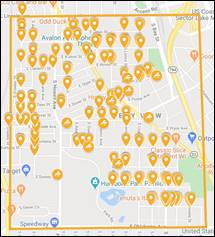 |
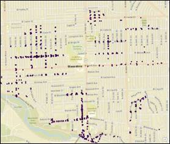 |
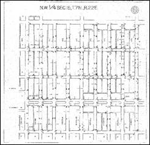 |
|
Google
Maps Bay View site |
Wauwatosa
Catch Basin shapefile |
1998 Milwaukee City
Planning UWM section pdf |
The provided data, while abundant in quantity, was all over the place.
Everything had a different format (online, shapefile, pdf, etc.), it was
difficult to determine precise catch basin locations, and it was hard to
preform meaningful analysis on because her mosquito larvae excel sheet had zero
spatial data directly associated with it. Haley knew this, which is exactly why
she was excited for me to take on the project. I hoped to rectify all these
issues by creating uniform, normalized shapefiles and maps with ArcGIS that
would benefit Haley’s project.
Digitizing Features
Virtually the same process was applied to each of the four study areas: for each area, I created a polygon feature class for the study area boundary, a point feature class for the catch basins (CBs), and a point feature class for traps.
Each study area’s CB attribute table contains fields for a site-unique CB identifier number, location, location comments, and the latitude and longitude of the digitized catch basins (see below). The CB number is the number assigned to the sampled CB within Haley’s provided maps. The location corresponds to the study area. Location comments provide additional information on the CB’s location (if it’s in an alley, whether it’s exact location needs to be verified, etc.). The latitude and longitude fields were calculated after the CB’s were digitized, using the attribute table’s calculate geometry function.
|
Bay View CB attribute table |
Each CB was individually mapped by referencing Haley’s CB Google Map, then using Google Earth street view to locate the CB, then plotting the point in ArcMap. For the most part, this process worked well. However, Google decided to map the streets of come areas in the fall, which resulted in leaves all over the road. This made it difficult to see some CBs (see below). For any CBs where I was unsure of their exact location, I made a note in that CB’s location comments within the site’s attribute table. Luckily, none of the roads were mapped in the winter.
|
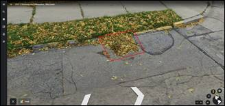 |
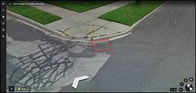 |
|
Leaf covered CB |
Google blurred this CB |
Additionally, for the Bay View and UWM study areas, I converted the
provided Milwaukee City Planning catch
basin pdfs to pngs, and georeferenced them to the basemap’s coordinate system (WGS_1984_Web_Mercator_Auxiliary_Sphere).
This was helpful mapping CBs when there were leaves on the road (see above) or
when the CBs on Haley’s provided maps were clustered together in the centers of
intersections, and I could not determine which corners they corresponded to
(see below).
|
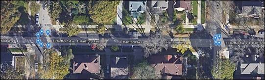 |
|
CB Google Map |
|
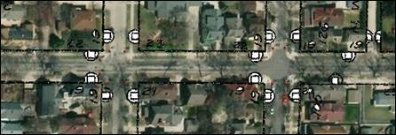 |
|
Georeferenced CB map
(black/white) and actual CB locations (red) |
The povided Wauwatosa CB shapefile was not as useful as I was hoping it would be. The majority of the mapped CBs were outside of the Wauwatosa study area., meaning that the majority of the CBs sampled for Haley’s project were not on it. In total, 250 CBs were each mapped in the Bay View and UWM study areas, 231 in the Wauwatosa study area, and 210 in the Cudahy study area.
Each study area’s trap attribute table contains fields for a site-unique trap identifier number, CDC trap identifier, Gravid trap identifier, location, location comments, year, and the latitude and longitude of the digitized traps (see below). The trap number is the number assigned to the sampled trap within Haley’s provided trap location excel spreadsheet. The CDC trap identifier and Gravid trap identifiers are binary values identifying whether that specific trap is a CDC trap, Gravid trap, or both. The location corresponds to the study area. Location comments provide additional information on the trap’s location. Many of the traps are located in individual’s yards, so the comments provide addresses, names, and phone numbers (if applicable). The year corresponds to the year that trap was active (2019). Again, the latitude and longitude fields were calculated after the traps were digitized, using the attribute table’s calculate geometry function.
|
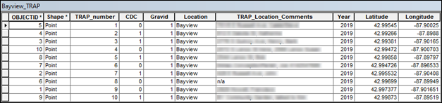 |
|
Bay View trap
attribute table |
The Bay View and UWM traps were mapped by referencing Haley’s CB Google Map. Cudahy and Wauwatosa traps were mapped based on the coordinates Haley provided in her trap location excel spreadsheet. Ten traps were mapped in each study area.
Maintaining Data
Connection
When initially discussing the project, Haley made it very clear that she wanted to use the geodatabase I created to help “visualize and analyze” the data she had collected on each of the sampled CBs. To preserve the opportunity for data analysis, each study area’s CB attribute table was given a _KEY field (where the _ is the first letter of the study area) made up of the CB number and study area location. This field was automatically calculated using the attribute table’s field calculator and the equation “_KEY = CB_number&Location”. Because each key contains a number and location, this process generated unique keys for each CB through the entire geodatabase. After converting the mosquito larvae data excel sheet to an older format supported by ArcMap, it was added to the geodatabase, and given an excel_KEY field. This excel_KEY field was calculated using the same method as each CB’s _KEY field.
Joining
the tables was not a viable option given each CB’s 1: N (one-to-many)
relationship with the data table (each CB was sampled multiple times over the
course of several weeks, so it has multiple data entries). Relating each study
area’s CB attribute table to the data table (using the unique keys mentioned
above as both the primary and foreign keys) was the best solution. In the below
example, CB number 4 in Bay View was selected (bKEY =
4Bayview). When you view the related mosquito data table, you can see that all
the available data on CB number 4 in Bay View was automatically returned (five
data entries for Excel_KEY = 4Bayview).
|
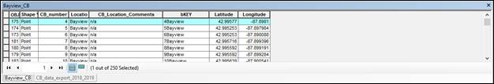 Selecting a CB (either within attribute table or via point on map) |
|
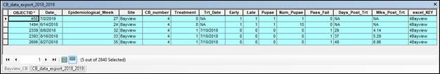 |
|
Returned data on
selected CB (from related mosquito data table) |
Shortest Path Analysis
Determining the shortest
route to visit each CB and trap location within each study area was also a
priority. According to Haley, each week her team argues about which route they
think is the most efficient to sample each CB and check each trap. With
ArcMap’s Network Analyst extension, they don’t have to
argue anymore.
For each study area, in order to use Network Analyst to perform a shortest path
analysis, I first needed to build a feature dataset containing all the
traversable roads and paths within each site. This entailed digitizing all the
roads and paths as line features, then joining them to form one road network
feature class. I then created a site-specific feature dataset, where I imported
that study area’s road network. Within that feature class, I was then able to
create a network dataset (transportation network), using the imported road
network. I chose to use a transportation network instead of a utility network
because transportation networks allow traffic to follow an edge in both
directions (because people can walk both up and down a road).
When
finding the trap route stops, the trap point feature classes were directly
loaded as stop locations. When determining the CB route stops, I manually added
network stops where CBs were clustered together. To find the shortest path to
visit each of the stops once (Traveling Salesman Problem), several Network
Analyst route properties were altered. As pictured below, within the route
layer properties, in the Analysis Settings tab, “Reorder Stops to Find Optimal
Route” was checked and both “Preserve First Stop” and “Preserve Last Stop” were
unchecked. Within the route layer properties, in the Accumulation tab, the
Accumulation Attribute “Length” box was checked. Length refers to the length of
the roads (in meters) assigned to the imported road network in the feature
dataset. These settings ensured Network Analyst would reorder the sequence of
stops until the route with the least total length was found.
|
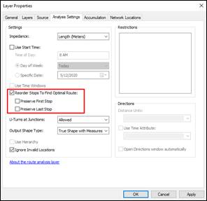 |
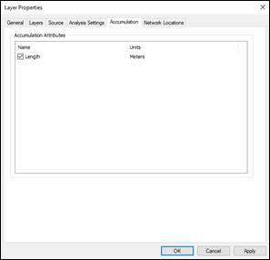 |
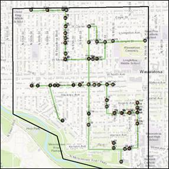 |
|
Route Analysis
Settings |
Route Accumulation
Settings |
Shortest Length
Wauwatosa CB Route |
Map Creation and
Layouts
When creating the study area maps, one of issues I found was that the CBs were extremely hard to accurately locate when viewing the entirety of a study area. This is especially apparent when viewing the site overview maps (see Maps page). In order to accurately show CB locations, each of the study areas were divided into a grid of equal-sized, adjacent zones. This was done by creating an 800x800 meter measured grid within each study area’s data frame. I found 800sq meters to be the right balance between showing a close enough view of the CBs to locate them, while avoiding dividing the area into an excessive number of zones. Each study area’s zones were then numbered so they could be easily referenced.
Each CB was symbolized with a red circle and labeled with their respective CB number. Traps were symbolized based on their CDC attribute value. A CDC attribute value of 0 indicates that the trap is a Gravid trap; symbolized by a blue triangle. A CDC attribute value of 1 indicates that the trap location contains both a CDC and Gravid trap; symbolized by a blue square. Using one field to divide the traps into their type was possible because trap locations either contain only a Gravid trap or both a Gravid and CDC trap: never just CDC trap. Each of the study area’s ten traps were labeled with their respective trap number.
|
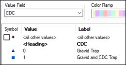 |
|
Trap Symbology – based on CDC value |
When initially mapping the CB and trap
points, I used one of Esri’s World Imagery basemaps.
I found the World Imagery basemap helpful when
plotting the points because it allowed me to accurately place CBs at the edges
of sidewalks, driveways, alleys, etc. The World Imagery basemap
shows the precise location of the CBs and traps, as well as provides real-world
reference points, like houses, sidewalks, trees, and parking lots. However, the
basemap itself is dark, which tends hide CB and trap
labels. The solution to this is to use another one of Esri’s provide basemaps;
World Topography. Esri’s World Topographic basemap is
light colored, which makes the CBs, traps, and their labels standout, and has
street names, which is handy in locating specific points. But, this basemap does not provide the same real-world locational
references of the World Imagery basemap. Because of
this, I exported maps with both World Imagery and World Topographic basemaps for each study area’s zones.
In total, I created unique 80 maps: showing
each study area’s overview, zones (with both World Imagery and World
Topographic basemaps), and best routes for visiting
each CB and trap location.
Conclusion and Future Direction
On May 8th, I presented my project progress over video call to the MCEVBD Mosquito Team. The MCEVBD Mosquito Team is composed of six people: including Haley and Dr. Lyric Bartholomay (Haley’s graduate program PI/head of the MCEVBD Mosquito Team). The team was incredibly receptive to the project; especially Haley who had yet to see everything I created come together. Dr. Bartholomay offered a few suggestions regarding feature symbology (changing the trap features to triangles instead of circles), which I appreciated and implemented. She also mentioned the possibility of getting in contact with me to do more GIS work for the MCEVBD in the future.
In addition to presenting my maps, related attribute tables, and CB/trap routes, I was also asked to suggest future directions for the project. I explained that it would be both easy and beneficial for Haley’s project to integrate the adult mosquito data she had had on the CBs in another (or the same) related table. This would allow her to perform even more mosquito data analysis. Examples of this possible analysis include creating a heatmap symbolizing the most productive and nonproductive CBs, based on their collected data. I also introduced the team to Digital Elevation Models (DEMs) and explained that a Milwaukee County DEM would allow CB and trap elevations, hillshade levels, and waterflow between basins to be calculated. DEM analysis would provide insight on how CBs and traps at different elevations, shade levels, and water levels differ from one another in terms of larvae and adult mosquito production.
I would have liked to have used ModelBuilder or ArcPy to automate some of the repetitive tasks of this project, but in practice most of the operations had to be done by hand (plotting points, updating attribute tables, creating zones, etc.). Those functions seem to be more designed for data analysis, not creating features. If I had access to a Milwaukee County DEM and ample time, I would like to use ModelBuilder to calculate each study area’s hillshade and waterflow. A site suitability analysis for the best mosquito breeding ground within each study area would be an interesting direction to go from there. You could then compare those sites to data gathered from the traps to determine if the real-world data backs up the site analysis.
Through working on this semester-long project, I was able to apply my existing GIS skills and learned a lot of new ones. Digitizing almost 1000 individual catch basins and traps gave me plenty of more experience working with the editor toolbar and attribute tables. I related tables, used grids, and used the Network Analyst extension, all for the first time.
Thank you to Haley and the MCEVBD Mosquito Team for the project.